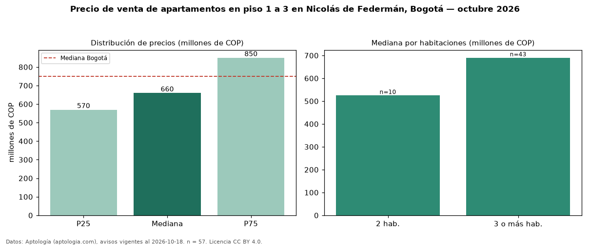

Precio de venta de apartamentos en piso 1 a 3 en Nicolás de Federmán, Bogotá — octubre 2026
En Nicolás de Federmán (localidad de Teusaquillo), Bogotá, la mediana de precio de venta de apartamentos en piso 1 a 3 es COP 660 millones, según 57 avisos vigentes. Eso es 12 % menos que la mediana de todos los apartamentos en venta de Nicolás de Federmán (COP 750 millones, n = 191); este segmento reúne el 30 % de esos avisos. Por metro cuadrado, la mediana es COP 6,22 millones/m² (n = 57), 11 % por debajo del conjunto de referencia (COP 7,01 millones/m²). El área mediana anunciada es 114 m². El segmento con más oferta es el de 3 o más habitaciones (43 avisos, mediana COP 690 millones); pasar de 2 habitaciones a 3 o más habitaciones cambia la mediana +31 %. La administración mediana declarada es COP 505.000 al mes (n = 53). El estrato más frecuente es 5 (51 % de los avisos con estrato). La mediana de todos los apartamentos en venta de Bogotá es COP 750 millones (−12 % de diferencia). Datos: Aptología (aptologia.com), CC BY 4.0 — https://www.aptologia.com/venta/bogota/nicolas-de-federman. Archivos: PDF, CSV con las cifras y gráfica PNG.

| Avisos únicos | 57 |
|---|---|
| Percentil 25 | COP 570.000.000 |
| Mediana | COP 660.000.000 |
| Percentil 75 | COP 850.000.000 |
| Mediana por m² | COP 6.218.905 |
Fuente: avisos vigentes de portales inmobiliarios recopilados por Aptología, deduplicados (mínimo 30 avisos únicos por celda). Precios pedidos, no cerrados. Fecha: 2026-10-18.